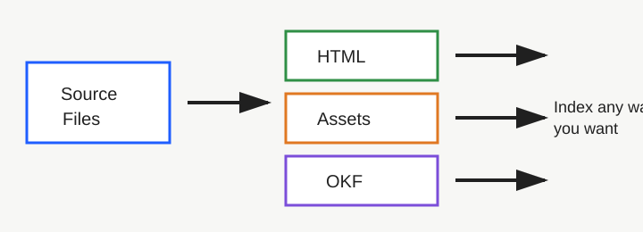

CTL Demo Market Snapshot
This generated sample gives CTL-Core headings, paragraphs, a table, links, and a local figure to preserve.
Summary
Semantic HTML can preserve document structure before any database, vector store, or graph layer is added.
The original file remains in the package. Extracted records link back to the source and copied assets.
Adoption Signals
| Signal | Value | Note |
|---|---|---|
| HTML structure | High | Headings, tables, figures, and links remain visible. |
| Database requirement | None | The package opens as static files. |
| Adapter flexibility | High | Indexes can be rebuilt from the CTL package. |

Learn more from the CTL-Core repository.